Programming for the Web
by Alex Castillo
Types of programming
- Front-End or Client Side
- HTML
- CSS
- JavaScript
- Back-End or Server Side
- PHP
- ASP
- Ruby
- Python
- And more...
What makes up a website?
- Content
- Presentation
- Behavior
Browser Comaptibility
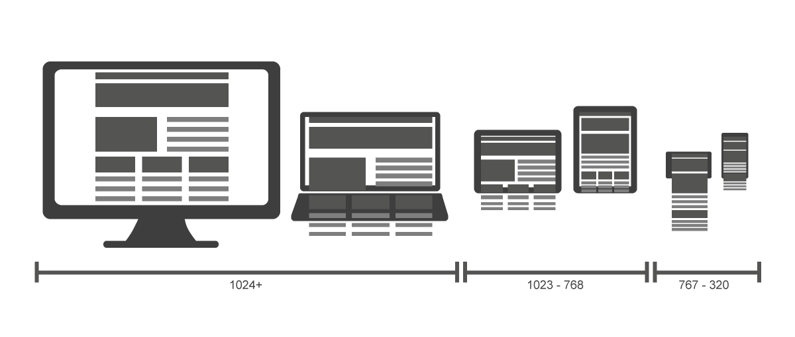Progressive Enhancement
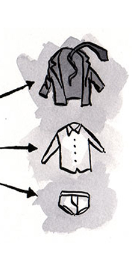Graceful Degradation
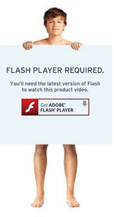Source Control
- GIT
- SVN
- TSF
- Others
GIT
Tracking changes with GIT

Contributing to open source
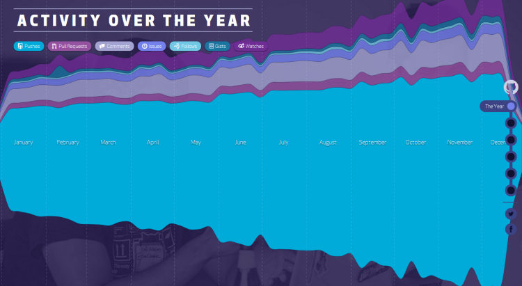Learning HTML & CSS
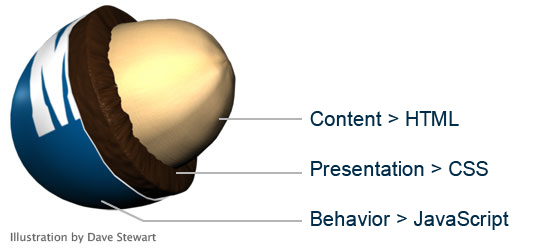HTML Syntax
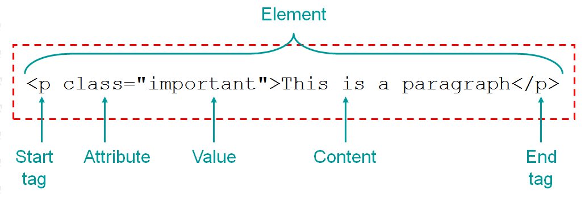CSS Syntax

Let's build a website
What is responsive web design?
A Responsive web/app responds to its viewing environment.
Approaches
- Adaptive Layouts
[multiple fixed layouts] - Responsive Layouts
[multiple fluid layouts] - Mixed approach
[Fixed width for large and medium]
[Fluid width for small]
Why is it so important?

Past
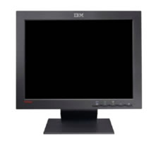Present

Future
?
When to use it?
- Website or Webapp?
- Time
- Budget
- Content
- Performance
- Browser support
The Designer’s Role
Being Technology conscious
Keeping UX & Design consistent
Leveraging Progressive Enhancement and Graceful Degradation
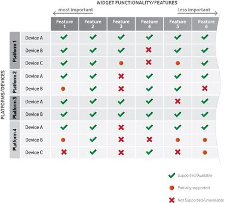Using native elements
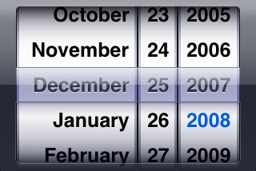Designing based on existing technologies
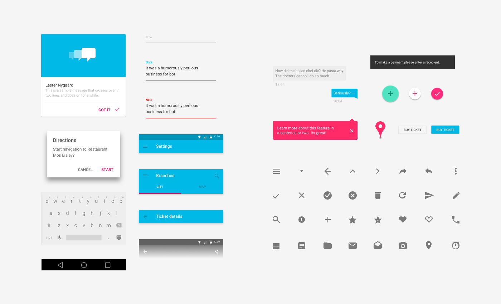 Material DesignUsing SVGs as much as possible
Scalable Vector Graphics
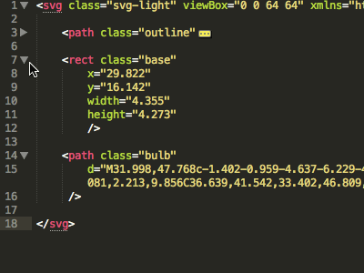How to think responsive?
- Mobile First?
- Canvas vs. Browser
- Systems not pages
Things to consider
- Modular
- Proportions
- Navigation
- Layout
- Grid
- Tables
- Media Assets
Resources
Conclusion
Questions?
Homework
Build a responsive registration form using HTML5 and CSS3.

Codepen.io is encouraged.
Thank you.
email: alex@castillo.io
website: www.castillo.io